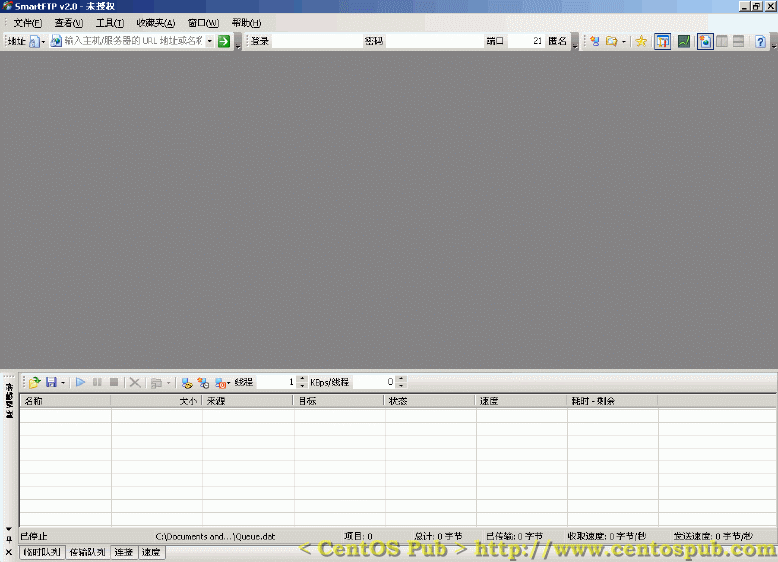
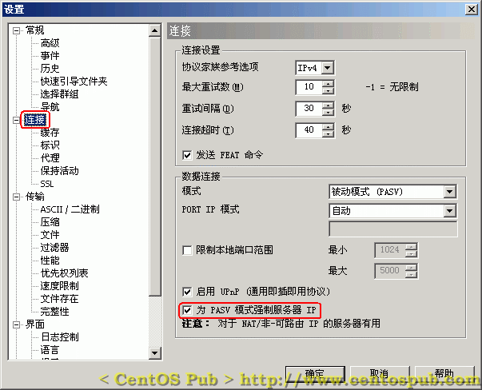
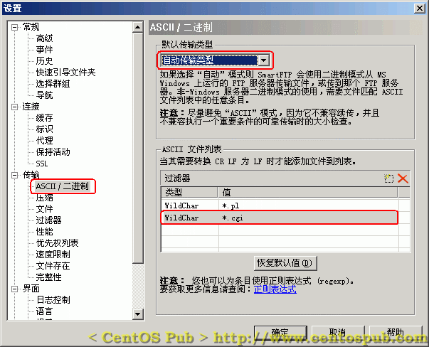
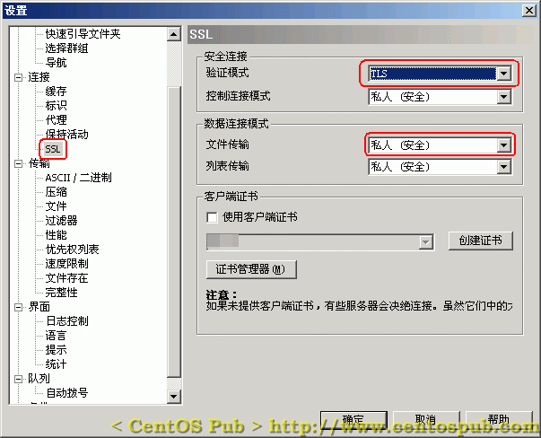
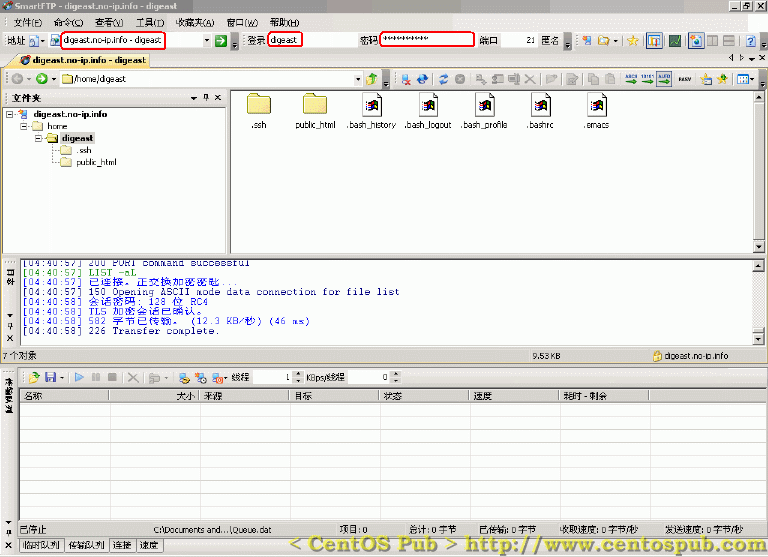

<<< 返回［配置详解］索引
< 用 FTP 客户端软件连接到服务器 > （最近更新日：2006/09/07）
在用ProFTPD构建FTP服务器的时候，为了全力保证文件传输时的安全，我们对FTP服务器进行了尽可能保密、安全的配置。比如其中提到的 TLS，并为服务器建立证书（SSL）等等的手段。这也决定了，在这些条件下，FTP服务器能够被客户端连接，也需要对应的客户端的条件。
首先，我们使用的FTP客户端软件，必须支持TLS；其次，我们使用的FTP客户端软件，要支持被动传输模式。并且由于在内网无法通过Global IP访问服务器，导致内网无法用被动模式来连接……这些问题，都可以通过使用SmartFTP具有的功能来解决。在这里，以SmartFTP为例，对 FTP客户端连接到服务器的方法进行解说。
[1] 下载
Smart FTP 到适当位置，并执行安装。
[2] 下载
Smart FTP 汉化包 ，并执行安装。
下载并汉化之后，启动Smart FTP，会看到如下主界面：

下面，为了能够连接到我们所配置的应用了TLS的FTP服务器上，需要对Smart FTP进行一些初始设置。在主界面按“Ctrl + o”，进入设置界面（或选择“工具”中的“设置”进入设置界面）。
[1] 在设置界面中，选择左侧栏中“连接”，在“连接的分选项”中选中“为 PASV 模式强制服务器 IP”,如下图：

[2] 在左侧栏“传输”中的“ASCII/二进制”分选项中，将“默认传输类型”设置为“自动传输类型”，并在ASCII文件列表中填加“*.cgi”形式的文件为ASCII方式传输。如下图：

[3] 在左侧栏“连接”中的“SSL”分选项中，将文件传输设置为“私人（安全）”。如下图：

最后，点击“确定”使设置生效并退出设置界面。
以上对Smart FTP进行了对应于我们FTP服务器的设置，如您有个人的一些需要，请在这基础上对Smart FTP进一步进行偏好设置。
在Smart FTP主界面上方，“地址”对应的文本框内输入服务器的IP地址（内网IP地址也可以。或者输入域名。这里以域名为例，以证明Smart FTP处理主动与被动传输模式的功能。）。在“登录”与“密码”的地方分别输入相应用户名与密码，然后直接敲下回车开始连接。连接成功后如下图所示：

注：上面的截图以digeast用户登录FTP服务器为例，由于本站在介绍CentOS安装后初始环境设置的时候将digeast用户加入到了wheel 组中，而在FTP服务器设置的时候，我们将wheel组以外的用户访问其Web目录（public_html）以外目录的权限禁止了，所以wheel组用 户登录FTP后会进入用户的根目录，对应的非wheel组的一般用户登录FTP后，将默认登录到其用户的Web目录（public_html）,并且其 Web目录将作为其根目录（一般用户不具备访问public_html以上级目录的权限）。